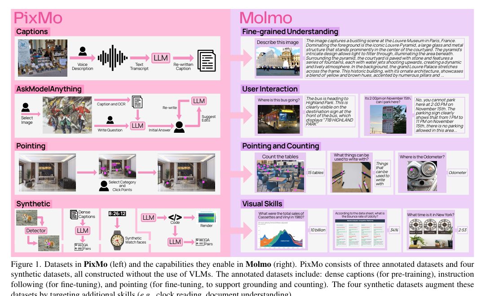
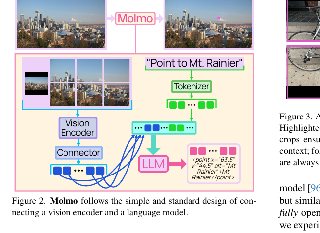
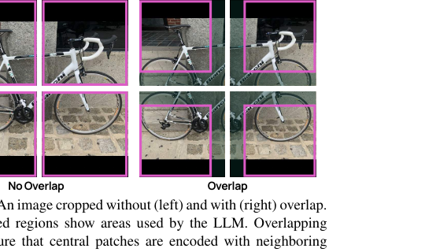
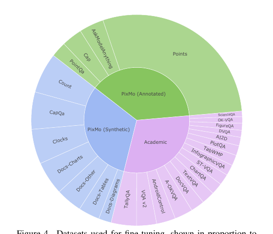

Molmo & PixMo: 把「指」做成一等公民

1. 出发点 (Motivation)
2024 年的开源 VLM 有一个公开的秘密:它们大多是闭源模型的蒸馏品。
像 LLaVA 这类早期工作权重 + 数据全开,但落后 SOTA 太多;而更强的开源权重模型 (如 ShareGPT4V 系) 的训练数据要么干脆不公开,要么大量依赖 GPT-4V 合成的 caption。结果是:社区缺失了「如何从零造一个强 VLM」的基础知识——你拿到的开源模型其实是把 GPT-4V 装进了另一个壳子里。
Molmo 的目标就是堵这个洞:全程不蒸馏任何 VLM,从预训练 caption 到 fine-tuning 指令数据全部自采。论文的论点是——卡脖子的不是模型架构 (架构他们刻意用最标准的),而是高质量、非蒸馏的多模态数据。这套数据叫 PixMo (Pixels for Molmo)。
其中最有原创性、也是本文要重点讲的,是一个全新的数据 modality:pointing (用点指代)。
为什么是「点」而不是框 (bounding box) 或掩码 (mask)?论文给的理由非常实际:
Using points enables us to collect grounding data much faster than would be possible using bounding boxes or segmentation masks since it is much easier to annotate. — §1
一个未受训的众包标注员,让他画一个紧贴物体的框很难 (要对齐四条边),画 mask 更是噩梦;但让他**「点一下这个物体」**几乎零门槛。Molmo 利用这个差异,收集了 230 万 条 grounding 标注。更重要的是,点这个 modality 解锁了三件别的格式做不到的事——指代、计数、视觉解释,这正是 §2 的核心。
而当我们站在 2026 年回看,会发现 Molmo 的 pointing 是一条技术路线的起点:后来 locate-anything-2026 把 grounding 升级成「bbox 作为不可分割的输出原子」,thinking-visual-primitives-2026 进一步把它升级成「primitives 作为思维原子」。这两篇都直接复用了 PixMo/Molmo 的数据。我们在 §5 会把这条谱系讲透。
2. 方法 (Method)
Molmo 的方法可以拆成两半:一个刻意保守的架构 + 一套激进创新的数据 (尤其是 pointing)。论文反复强调「成败 90% 在数据」,所以我们也把重心放在 pointing。
2.1 架构:刻意标准,但有两个干净的工程点

<point x="63.5" y="44.5" alt="Mt. Rainier">Mt. Rainier</point>——坐标和语言在**同一个 token 流**里,不需要额外的检测头。
整体是四件套:(1) 预处理器把图切成多尺度多裁剪,(2) ViT 逐 crop 编码,(3) connector 池化 + 投影到 LLM 嵌入空间,(4) decoder-only LLM。主力用 OpenAI CLIP ViT-L/14 336px + Qwen2 72B,但也放出基于全开的 MetaCLIP + OLMo 的 100% 可复现版本。
两个值得记住的工程点:
(a) Overlapping multi-crop (重叠裁剪)。 高分辨率图被切成多个方形 crop 平铺,每个 crop 独立过 ViT。问题:裁剪边界的 patch 丢失了相邻上下文。Molmo 让 crop 之间重叠,使边界 patch 至少能看到一些邻居;但重叠区的 patch 特征不传给 LLM (只传刚好平铺原图的那些),避免重复。

(b) 2×2 mean-query attention pooling (connector)。 ViT 出来的 patch 特征太多,要压。Molmo 不简单 concat,而是把每个 2×2 patch 窗口用一个 multi-head attention 池化成一个向量,query 取这 4 个 patch 的均值:
—— 翻译: 把 4 个相邻 patch 特征 $h_i$ 的平均当作"提问者" $q$,让它对这 4 个 patch 做一次注意力,得到一个融合向量 $z$ 代表这 2×2 区域。比直接把 4 个特征拼起来 (stacking) 好——消融里 76.1 → 76.9 (Table 2f)。
这两点配合 connector 还有一个反常识结论:不需要单独的「只训 connector」热身阶段。只要预训练在高质量 dense caption 上做,直接给 connector 一个更高学习率 + 更短 warmup 就够了,省掉了一整个训练 stage 和它依赖的噪声网络数据。
2.2 PixMo 数据:全部不靠 VLM
PixMo 有 7 个数据集 (Fig 1)。三个人工标注:
- PixMo-Cap (712k 图):预训练用的稠密 caption。诀窍是让标注员对着图口述 60–90 秒而不是打字——人说话比打字描述得更细更快,而且口述录音是「没用 VLM」的天然回执 (audio receipt)。平均 196 词/caption,而 COCO 只有 11 词。
- PixMo-AskModelAnything (162k QA / 73k 图):标注员写问题,用纯语言 LLM (喂 OCR + caption) 起草答案,标注员反复修订到满意。
- PixMo-Points:本文主角,下一小节细讲。
四个合成 (但仍不用 VLM):PixMo-CapQA、PixMo-Docs (用 LLM 写代码渲染图表再据代码生成 QA)、PixMo-Clocks (渲染表盘)、PixMo-Count (用非 VLM 检测器在网图上造计数 QA)。

2.3 PixMo-Points:pointing 数据怎么收、为什么收三种
这是 Molmo 最核心的贡献。论文明确说 pointing 服务三个目标:
(1) enable the model to point to items described by text, (2) enable the model to count by pointing, and (3) use pointing as a form of visual explanation when answering questions. — §3
收集方式:标注员被要求「点一个物体,描述它,然后逐个点出图中这个物体的每一个实例,确保穷尽覆盖」。还专门收了 "not present" (物体不在图里) 的数据,让模型学会说「图里没有」。最终:
- 2.3M question-point 对 / 223k 图 (指代 + 计数)
- 79k point-explanation 标注 / 14k 图 (点作为视觉解释)——这部分把 AskModelAnything 流程改造,把「带文字标注的点列表」喂给 LLM,让它在回答里引用这些点
最妙的设计——count by pointing (数数即指点):
Pointing data also naturally supports answering counting questions with a chain-of-thought formed by the sequence of points. — §3
这句话信息量极大。传统 VLM 数数靠「一眼扫过去报个数」,密集场景必然出错。Molmo 让模型逐个点出每一个实例,点的序列本身就是一条 chain-of-thought,最后点的数量就是答案:
—— 翻译: 模型不是直接「猜」出数字 $\hat n$,而是先一个一个地把点 $p_i$ 吐出来 (像人用手指着一个个数),数完了取点的个数作为计数。把"数数"这个易错的整体判断,拆成"逐个定位"这个可分解、可自我核对的过程。
这个 count-by-pointing 就是后来 thinking-visual-primitives-2026 把 visual primitives 当「思维原子」的最早雏形——只不过 Molmo 只把它用在计数这一个窄任务上,2026 那篇把它推广到迷宫、路径追踪、空间推理。
2.4 Pointing 的输出格式 (代码实锤)
点怎么变成 token?Molmo 不用任何特殊检测头,直接把坐标当纯文本输出,归一化到 0–100。核心就是这个 points_to_text:
repo/olmo/data/data_formatter.py:L308-L323 — 把像素点转成模型要生成/读取的文本坐标
def points_to_text(self, points, scale, label_text, alt_text):
if isinstance(scale, (tuple, list)):
points /= np.array(scale)[None, :]
else:
points *= (100/scale)
points = [[round(x, 1), round(y, 1)] for x, y in points]
points.sort(key=lambda x: x[0]*10000 + x[1])
if len(points) == 1:
x_str, y_str = points[0]
return f"<point x=\"{x_str:0.1f}\" y=\"{y_str:0.1f}\" alt=\"{alt_text}\">{label_text}</point>"
point_text = []
for ix, (x, y) in enumerate(points, start=1):
point_text.append(f"x{ix}=\"{x:0.1f}\"")
point_text.append(f"y{ix}=\"{y:0.1f}\"")
point_text = " ".join(point_text)
return f"<points {point_text} alt=\"{alt_text}\">{label_text}</points>"
三个细节直接对应论文正文:
- 归一化到 0–100、保留 1 位小数 (
points *= (100/scale)+round(x, 1)):坐标与图像绝对分辨率解耦,1 位小数让有效分辨率约等于 0–1000。这对应论文「outputs points as plain-text coordinates normalized between 0 and 100」。 - 排序
x*10000 + y(即先按 x 再按 y,近似从左到右、从上到下):多个点有确定顺序,训练目标不会因为点的排列歧义而抖动。 - 单点用
<point>,多点用<points x1=.. y1=.. x2=.. ..>:都带alt(无障碍描述) 和包在标签里的label。坐标活在普通 token 流里,所以同一个 LLM 既能说话又能指点。
而 count-by-pointing 的「点完求和」也在数据格式里写死——format_points 在 point_count 风格下直接把总数拼进监督文本:
repo/olmo/data/data_formatter.py:L334-L359 — 计数样本的监督文本 = 点列表 + 总数
def format_points(self, example):
...
if "point_scale" in example: # 点已归一化
point_txt = self.points_to_text(points, example["point_scale"], label, label)
else: # 点是像素坐标
h, w = example["image"].shape[:2]
point_txt = self.points_to_text(points, [w/100, h/100], label, label)
if style == "point_count":
return f"Counting the {point_txt} shows a total of {len(points)}."
else:
return point_txt
注意监督文本 Counting the <points ...> shows a total of {len(points)}——点序列在前,总数 len(points) 在后,逼模型先定位再计数,这就是 count-by-pointing 的 CoT 在数据层面的实现。len(points)==0 时返回 "There are none.",对应「not present」负样本。
至于「~100 个 question 模板」的说法,也直接对得上代码里的模板表:
repo/olmo/data/data_formatter.py:L113-L166 — pointing / point_count 的提问模板 (节选)
"pointing": [
"Point to {label}\nPlease say 'This isn't in the image.' if it is not in the image.",
"Point to all occurrences of \"{label}\"",
"Show me where {label} is",
"Generate a list of points showing where the {label} are.",
"Can you point out all {label} in this image?",
...
],
"point_count": [
"Tell me how many {label} there are and point to them.",
"Generate list of points showing where the {label} are and output the total count.",
"Can you point out all {label} in this image? How many are there?",
...
],
随机采样这些模板,让模型学会无论用户怎么问「在哪/有几个」都能输出点 + 计数。
2.5 训练:两阶段,pointing 要上采样
训练只有两阶段 (比常见的三阶段少一个 connector 热身):
- 预训练:全参数在 PixMo-Cap 上学「生成 caption / 口述转录」。90% 的时候给一个长度提示 (length hint) 引导输出长度。还有个 trick:预训练时只对文本 token 加 dropout,逼模型多依赖图像而非语言先验 (消融 Table 2c)。
- Fine-tuning:在 PixMo 各集 + 一堆学术集 (VQA v2 / ChartQA / DocVQA / AI2D / TallyQA…) 上混训。用
vqa2:这类风格标签告诉模型该用哪种答案风格,避免学术集的怪癖 (如 ChartQA 数字不带逗号) 污染面向用户的回答。pointing 数据显著上采样,因为它学得比 QA 慢。
视觉 connector 那边对应的池化实现:
repo/olmo/model.py:L1551-L1566 — 2×2 窗口 mean-query attention pooling
image_features = einops.rearrange(
image_features,
'b n (h dh) (w dw) c -> (b n h w) (dh dw) c',
dh=cfg.image_pooling_h, # 2
dw=cfg.image_pooling_w, # 2
)
if cfg.image_pooling_2d == ImagePooling2DType.attention_meanq:
query = image_features.mean(-2, keepdim=True) # 4 个 patch 的均值作 query
image_features = self.image_pooling_2d(query, image_features)
rearrange 把每个 2×2 patch 窗口拢到一起,query = mean 正是 §2.1 公式里的 \(q=\frac14\sum h_i\),然后一层 attention 池化。代码与论文一字不差。
3. 结论 (Key Findings)
Molmo 在 11 个学术 benchmark + 一个 870 人参与的 325k 次成对人评 上评测。核心数字:
| 模型 | 类别 | 11 项均分 | Elo 排名 |
|---|---|---|---|
| GPT-4o-0513 | 闭源 API | 78.5 | 1 |
| Molmo-72B (Qwen2-72B) | 全开 | 81.2 | 2 |
| Gemini 1.5 Pro | 闭源 API | 78.3 | 3 |
| Claude 3.5 Sonnet | 闭源 API | 76.7 | 4 |
| Molmo-7B-D | 全开 | 77.3 | 6 |
| Qwen2-VL-72B | 开权重/闭数据 | 79.4 | 12 |
| GPT-4V | 闭源 API | 71.1 | 10 |
关键发现:
- Molmo-72B 学术均分全场第一 (81.2),人评 Elo 第二、仅次于 GPT-4o——而且完全不蒸馏任何 VLM。最小的 MolmoE-1B 就逼近 GPT-4V。
- Counting 屠榜:在 CountBenchQA 和更难的新基准 PixMo-Count 上,Molmo 领先所有模型 (包括所有闭源),论文直接归功于「new pointing data and chain-of-thought point-and-count abilities」。这是 pointing 价值最硬的证据。
- 强在哪、弱在哪很诚实:自然图问答 (RealWorldQA / VQA v2)、OCR 类、时钟读取强;但 MMMU / MathVista 这类高阶推理偏弱,因为训练 mix 缺推理数据。
- Pointing 还能驱动 action:Molmo-72B 在 AndroidControl 上 low-level 88.7% / high-level 69.0%,接近专门工作——暗示「点 UI 按钮 = 操作界面」这条 agent 路线。
消融 (Table 2/3) 也支撑了架构选择:overlap 裁剪 (62.8→76.9)、attention 池化 (>stacking)、文本-only dropout、length hint 都有正贡献,且 DINOv2 (纯图像、无文本监督) 居然和 CLIP 打平,说明 caption 质量比视觉编码器的语言对齐更关键。
4. 实现细节 (Implementation Notes)
代码 + 权重 + 数据全开 (github.com/allenai/molmo,HF 有 Molmo-7B-D/O、MolmoE-1B、Molmo-72B)。交叉阅读 repo 后的实现要点:
- 点坐标是纯文本不是特殊 token (
data_formatter.py:L317):Molmo 用<point x=".." y="..">这种字面字符串,坐标数字走普通 tokenizer。这和 2026 的后辈不同——locate-anything-2026 用量化到 0–1000 的整体坐标 token,thinking-visual-primitives-2026 用<|box|>/<|point|>专用词表 token。Molmo 的纯文本路线实现最简单,但坐标精度受 tokenizer 切分影响。 - 多点排序键
x*10000+y(data_formatter.py:L314):近似「左→右、上→下」。这个确定性排序对训练稳定性关键——否则同一组点的任意排列都是合法目标,梯度会打架。 - count-by-pointing 写死在监督文本里 (
data_formatter.py:L356-357):Counting the {points} shows a total of {len}——点在前数在后。模型不是学「看一眼报数」,是学「逐点定位再求和」。 - negative / not-present 样本 (
data_formatter.py:L343-347):len(points)==0→"There are none.",显式教模型 abstain,降低 grounding 幻觉。 - points-as-explanation 用占位符注入 (
data_formatter.py:L325-332):format_annotated_text把回答里的<|POINT|>占位符替换成真实点文本,让点能内联进自由回答。这是三个 pointing 目标里的第 (3) 个。 - 多标注图共享一次图像编码 (论文 §2 + 训练代码):同一张图的多条标注拼成一条长序列,用 attention mask 隔离 (每条标注只看图 token + 自己),省掉 2/3 的图像重复编码,训练时间砍半。
- 评测时 crop 数要和训练一致 (论文 §5):一般评测用 36 crop,但计数任务必须用训练时的 crop 数——「pointing capabilities do not generalize well with different numbers of test crops」。这是 pointing 的一个脆弱点。
- paper ↔ code 一致性:核心 pointing 格式、attention 池化、count-by-pointing 都能在 repo 找到逐行对应,未发现明显出入。唯一「论文略而代码详」的是排序键的具体形式 (
x*10000+y),论文只说「top-down, left-to-right」。
5. 批判性总结 (Critical Assessment)
5.1 优点
- 「点比框便宜」是个真正可规模化的洞见。把 grounding 的标注成本从「画框/画 mask」降到「点一下」,直接换来 2.3M 量级、未受训众包就能产出的数据。这是工程上最聪明的一步。
- count-by-pointing 把易错的整体判断拆成可分解的过程,在 counting 上拿到了对所有闭源模型的领先——这是 pointing 价值的硬证据,不是「我们也支持这个功能」的口头宣称。
- 不蒸馏的工程纪律:口述 + audio receipt、LLM 改写而非 VLM 生成,整套数据管线是「如何从零造 VLM 数据」的完整 recipe,对社区的知识贡献大于单个模型分数。
- 架构刻意保守 + 消融详尽:把变量集中在数据上,overlap 裁剪 / attention 池化 / dropout / length hint 每个都有消融背书,可信度高。
- 全开 (权重+数据+代码+评测),且给了 100% 可复现的 MetaCLIP+OLMo 版本——这正是它能成为 2026 年两篇后辈数据源的原因。
5.2 不足 / 疑点
- 点坐标用纯文本,精度天花板受 tokenizer 限制。
<point x="63.5">里的63.5怎么被切分、小数位如何泛化,论文没分析。这正是 locate-anything-2026 用整体量化坐标 token 要解决的问题。 - pointing 对 test-time crop 数敏感,换 crop 数就退化 (§5 自己承认),需要额外高分辨率后训练补救——说明 pointing 能力没有完全和分辨率解耦,稳健性存疑。
- 高阶推理 (MMMU/MathVista) 偏弱:Molmo 强在感知 + 定位 + 计数,但在需要多步抽象推理的任务上落后。pointing 解决的是「指代/计数」,不是「推理」——这恰恰是 thinking-visual-primitives-2026 想补的缺口。
- count-by-pointing 只用在计数一个任务。Molmo 已经有了「点序列即 CoT」的形态,却没把它推广到空间推理 / 拓扑 / 路径——这步留给了 2026 的后辈,也算是错失的一个方向。
- 「点」缺几何信息。点只有位置,没有大小/形状/范围。对「这个物体多大」「两物体是否重叠」这类问题,点不如 box——这是 locate-anything-2026 坚持用 bbox 的核心理由之一 (bbox = 2 个点,信息严格更多)。
- 2D pointing 没有深度 / 3D,论文设想的机器人 waypoint / pick 在真实 3D 操作里还差一层。
5.3 谱系对比:Molmo → LocateAnything → Thinking-with-Visual-Primitives
这是本文最值得展开的部分,也是用户关心的核心。三篇工作其实是同一条「让 VLM 用坐标说话」主线上的三代,而 Molmo 是公认的祖先 (后两篇都直接拿 PixMo/Molmo 当数据)。
| 维度 | Molmo (2024) | locate-anything-2026 (LocateAnything) | thinking-visual-primitives-2026 (Thinking-VP) |
|---|---|---|---|
| 一句话定位 | 点是答案 | bbox 是一等输出 | point/bbox 是一等思维 |
| 原语 | point (位置) | bounding box (位置+几何) | point + bbox |
| 坐标编码 | 纯文本 0–100,<point x=..> |
量化整体 token 0–1000,<box> 原子块 |
专用词表 <|box|>/<|point|> 0–999 |
| 解码方式 | 标准自回归逐 token | 并行 (Parallel Box Decoding,一次出整框) | 自回归,但穿插进 CoT |
| 坐标出现位置 | 在最终回答里 | 在最终输出里 | 在思考过程里 (interleave CoT) |
| 核心诉求 | grounding 数据可规模化 | 精度 + 吞吐 (12.7× 加速) | 推理 (计数/拓扑/空间) |
| 与 Molmo 的关系 | 起点 | 数据引擎直接用 Molmo 出点;训练含 PixmoPoints (2.2%) | 把 PixMo/Molmo 列为 6 个 grounding 集之一 |
读这张表的三条主线:
-
输出单元在升级:点 (Molmo) → 框 (LocateAnything) → 点和框都当思维原子 (Thinking-VP)。Molmo 选点是为了标注便宜;LocateAnything 回到框是为了几何信息更全且能并行解码;Thinking-VP 两者都要,因为思考时既要精确指点 (point) 又要框住区域 (box)。
-
坐标在序列里的位置在「前移」:Molmo 和 LocateAnything 的坐标都出现在最终输出,区别只是「答案里」vs「结构化输出里」、串行 vs 并行;而 Thinking-VP 把坐标前移到思考过程中——模型一边推理一边「点」,坐标成了中间产物而非终点。这是最大的范式跳跃。
-
Molmo 的 count-by-pointing 是 Thinking-VP 的种子。回看 §2.3:Molmo 早就让「点的序列构成一条 chain-of-thought」来数数。Thinking-VP 的 Reference Gap framing (语言无法精确指代密集空间,所以让模型「用手指点」着思考) 本质上是把 Molmo 这个只用于计数的窄 CoT,推广成了通用推理范式 (迷宫、路径追踪、多跳空间推理)。换句话说:Molmo 发明了「指着数」,Thinking-VP 把它变成「指着想」。
-
数据的血缘是实打实的,不是比喻。LocateAnything 的多目标 grounding 数据引擎里,有一步是「Qwen3-VL 出 query → Molmo 出候选点 → SAM 3 把点转框」,并且 LocateAnything-Data 直接含 PixmoPoints 子集;Thinking-VP 在专项 primitive 能力上补的 6 个公开集第一个就是 PixMo/Molmo。所以这不是「思想上的致敬」,是 Molmo 的标注数据物理地流进了 2026 这两个模型的训练集。
一句话总结这条谱系:Molmo 证明了「让 VLM 用坐标说话」可以靠便宜的人工点击规模化;LocateAnything 把「说」的单元和效率做到极致 (框 + 并行);Thinking-VP 把坐标从「说的内容」变成「想的工具」。三者不冲突,理论上可以是同一个模型的三种能力。
5.4 适用 vs 不适用
- ✅ 适用:需要 grounding / 计数 / 指代 / UI 定位能力,且要全开可复现的团队。Molmo 是 2024 年起最干净的开源 VLM baseline,数据管线本身就是教材。
- ✅ 适用:想低成本自建 grounding 数据的人——「点击 + 语音描述」这套众包 recipe 可直接抄。
- ✅ 适用:研究「坐标如何进入语言模型」演化史的人——配合 locate-anything-2026 / thinking-visual-primitives-2026 一起读,能看清一条完整技术路线。
- ⚠️ 谨慎:要高阶视觉推理 (MMMU/MathVista) 的场景,Molmo 偏弱,需补推理数据或换更新模型。
- ❌ 不适用:要 3D / 深度 / 紧致 mask 的任务——Molmo 只有 2D 点,几何信息最少。
- ❌ 不适用:对坐标精度要求极高且 batch 推理吞吐敏感的生产线——纯文本坐标 + 串行解码,效率不如 LocateAnything 的并行框解码。
5.5 进一步阅读
- 同主线后辈 (本文重点对比对象):
- locate-anything-2026 (LocateAnything) — bbox 当原子、并行解码,把 grounding 的精度+吞吐做到极致;数据引擎直接用 Molmo 出点
- thinking-visual-primitives-2026 (Thinking with Visual Primitives) — primitives 当思维原子穿插 CoT,把 Molmo 的 count-by-pointing 推广成通用推理范式
- structured generation in VLM 旁支:mrt-2026 (regional latent + RoPE 编 bbox)、rep-forcing-2026 (representation token 自回归)
- Molmo 的底座:Qwen2 / OLMo (LLM)、OpenAI CLIP / MetaCLIP / DINOv2 (视觉编码器,消融里有横比)
讨论 / Comments
评论托管在本仓库的 GitHub Discussions, 需 GitHub 账号。